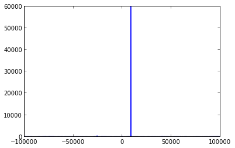
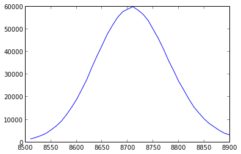
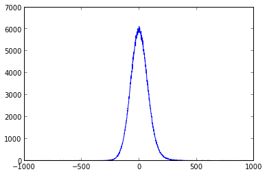

Frequently, data is taken without pre-calibrating the PicoHarp or HydraHarp to remove relative offsets between the channels. This example walks through how to correct for these errors using the ttd collection of programs.
As an example, we'll use data from the SPDC source that was collected using the NIST SNSPDs from the SPDC pair-source. This data is in .ht2 format, with the following channel connections:
While we're using an .ht2 file for this example, the programs support all of .pt2, .pt3, .ht2, and .ht3 for all file versions encountered so far.
The various ttd programs are written to operate on a unified file format, typically with the extension '.ttd'. In contrast to PicoQuant data files (e.g. .ht2, .pt3), these files contain records only from a single channel, and photon records are 64 bits long (as opposed to 32 bits/record in PicoQuant files. In particular, .ttd files are binary files where each 64 bit block corresponds to an unsigned 64 bit integer, which is the time tag in picoseconds of the photon arrival.
This file format has several consequences. The main downside is that storage of the TTD files requires approximately 2x as much disk space as for the PicoQuant files. As it's advisable to hold on to the original PicoQuant files, use of this format multiplies required storage by a factor a little less than 3. However, disk space is cheap, and we gain several benefits:
As $2^{64}$ picoseconds is approximately equal 213.5 days -- far longer than any experiment needs to run -- we may store the timetags explicitly without overflows. This allows us to process parts of a file without reading the entire thing, or to split the files into pieces for separate processing as a function of time.
We can perform operations on individual channels quickly and easily. This example (fixing offsets between channels) is the most common use case.
Less obvious to the user, the coding and testing of the ttd programs is greatly simplified by separating the conversion from PicoQuant data files to .ttd and the post-processing. This reduces both bugs and development time, meaning that new features can be implemented quickly and reliably.
To convert the .ht2 file, we use the program pq-ttd. In this example, the data file is named 'example-fixdelays.ht2'. pq-ttd has two command line options: '-i' and '-o'. -i is required -- it provides pq-ttd with the PicoQuant data file, while '-o' is optional and dicatates the output prefix. If this is omitted, the output files simply use the original filename (without the extension).
Performing the actual conversion:
% pq-ttd -i example-fixdelays.ht2 -o ex
Output Prefix: ex
Instrument: HydraHarp
Measurement Mode: T2
File Format Version: 2
Number of records: 71400917
Timing Resolution: 1 ps
Sync Period: 2178887 ps
Sync Rate: 458950 Hz
Records Read: 71400917
Elapsed Time: 1.37726 seconds
% ls -lh
-rw-r--r-- 1 [user] [group] 266M Jan 8 11:46 ex-channel-1.ttd
-rw-r--r-- 1 [user] [group] 73M Jan 8 11:46 ex-channel-2.ttd
-rw-r--r-- 1 [user] [group] 56M Jan 8 11:46 ex-channel-3.ttd
-rw-r--r-- 1 [user] [group] 0B Jan 8 11:46 ex-channel-4.ttd
-rw-r--r-- 1 [user] [group] 136M Jan 8 11:46 ex-channel-sync.ttd
-rwxr-xr-x 1 [user] [group] 272M Jan 8 11:33 example-fixdelays.ht2
%
(Side note: Throughout this document, text cells like the one above, with a '%' at the beginning of input lines, correspond to the shell/terminal)
Note that ex-channel-4.ttd is 0 bytes large, indicating that no records were found on that channel (as expected). The rest of the files are what we'll use for the following; to keep better track of them, let's rename them to something more useful (and delete the extra file):
% mv ex-channel-sync.ttd alice-nd.ttd
% mv ex-channel-1.ttd bob-nd.ttd
% mv ex-channel-2.ttd alice-d.ttd
% mv ex-channel-3.ttd bob-d.ttd
% rm ex-channel-4.ttd
% ls
alice-d.ttd alice-nd.ttd bob-d.ttd bob-nd.ttd
example-fixdelays.ht2
%
In this case, we want to remove the delay between each pair (dispersed or not) of channels, so that photons from the pair source arrive at the same "time" at each detector. We can do this using the g2 calculation tool.
First, let's calculate the offset between the non-dispersed channels. As for all ttd programs, the flag '--help' lets us check the command line options:
% Usage: ttd-g2 [-1 input_file_1] [-2 input_file_2] [-o output_file_1]
[-b bin_time] [-w window_time] [-T input2_offset]
Notes:
-b (--bin-time): Specified in picoseconds
-w (--window-time): Window time in picoseconds
-T (--input-offset): Offset input2 relative to input1 (input in picoseconds)
Other options:
-v (--verbose): Enable verbose output to stdout
-h (--help): Print this help dialog
-V (--version): Print program version
%
The important pieces here are the bin time, the window time, and the various files. We can ignore the option to offset one of the channels for now, though we'll use it later for fine tuning. All times for ttd programs are given in picoseconds (unless otherwise noted explicitly), and can either be given as an integer (e.g. 50000 for 50ns) or in scientific notation (e.g. 5e4). Note that only integers can be passed on the command line, so if you want 5.4e5, you'll need to write 54e4.
Let's run the g2 with a window time of 100ns and a bin time of 10ps on the non- dispersed data. Here, we've added the '-v' flag for verbose output, and add the command 'time' at the beginning the line to monitor how long the command takes:
% time ttd-g2 -v -b 1e3 -w 1e5 -1 alice-nd.ttd -2 bob-nd.ttd -o nd-g2.csv
Infile 1: alice-nd.ttd
Infile 2: bob-nd.ttd
Outfile: nd-g2.csv
Bin time: 10 ps
Window time: 100000 ps
Offset file 2 times by 0 ps
Block size: 16384 records
real 0m1.769s
user 0m1.587s
sys 0m0.103s
%
Block size is a debugging option which can be ignored (for the interested, it's the number of records fetched from disk per 'fread' call). Otherwise, this output lets us check that the program is doing what we expect, both with regards to filenames and times.
Next, let's load and plot this histogram. The g2 csv file has two records per line, corresponding to the center time of that bin and the number of counts in that bin respectively.
%pylab inline
g2_data = np.genfromtxt('nd-g2.csv', delimiter=',')
times = g2_data[:,0]
counts = g2_data[:,1]
plt.plot(times, counts)
Populating the interactive namespace from numpy and matplotlib
[<matplotlib.lines.Line2D at 0x10a0eb790>]

We can see that the autocorrelation is very sharply peaked at a time slightly greater than zero. Extracting the time of this bin, and then plotting the 40 bins around it:
peak_index = counts.argmax()
peak_time = times[peak_index]
print "Peak found at {0} ps".format(peak_time)
plt.plot(times[peak_index-20:peak_index+20], counts[peak_index-20:peak_index+20])
Peak found at 8710.0 ps
[<matplotlib.lines.Line2D at 0x10a341990>]

The autocorrelation code computes time differences by subtracting the time of the arrival in the '-2' file from the time of the arrival in the '-1' file. So the above results mean that bob-nd.ttd is 8710 picoseconds after alice-nd.ttd. We have the choice here of either shifting alice-nd.ttd forward by 8710ps or shifting bob-nd.ttd back. Let's do the latter:
% ttd-shift -i bob-nd.ttd -o bob-nd-shift.ttd -T -8710 -v
Input file: bob-nd.ttd
Output file: bob-nd-shift.ttd
Delay Time: -8710 ps
%
Just to check that this worked, let's re-run the g2 using the delayed file. This time, we can use a much smaller bin size (1ps, the minimum) and window size (1000 ps) since we know -- assuming the above has worked correctly -- that the peak will be centered at 0 time offset.
% ttd-g2 -v -b 1 -w 1e3 -1 alice-nd.ttd -2 bob-nd-shift.ttd -o nd-g2-shift.csv
Infile 1: alice-nd.ttd
Infile 2: bob-nd-shift.ttd
Outfile: nd-g2-shift.csv
Bin time: 1 ps
Window time: 1000 ps
Offset file 2 times by 0 ps
Block size: 16384 records
%
g2_data_shift = np.genfromtxt('nd-g2-shift.csv', delimiter=',')
times_shift = g2_data_shift[:,0]
counts_shift = g2_data_shift[:,1]
plt.plot(times_shift, counts_shift)
[<matplotlib.lines.Line2D at 0x10a794c10>]

And that's pretty much it! The same process can be repeated on the other pair of channels (alice-d.ttd and bob-d.ttd) but since it's repetitive, I'll skip it here.